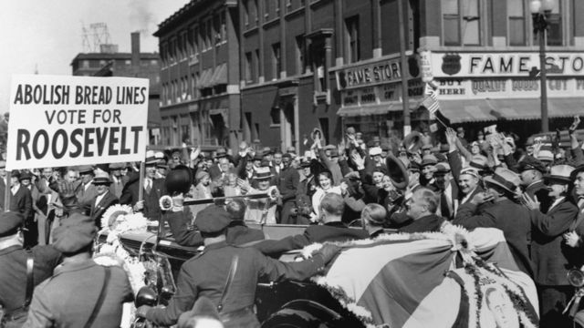

El crac del 29 fue la más catastrófica caída del mercado de valores en la historia de la bolsa en Estados Unidos, tomando en cuenta el alcance global y la larga duración de sus secuelas y que dio lugar a la crisis de 1929 también conocida como la Gran Depresión.
